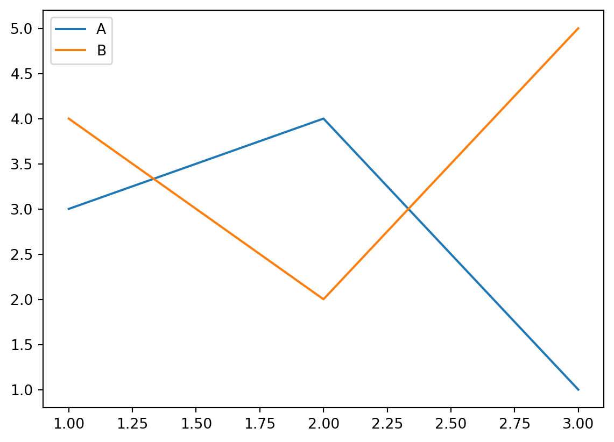
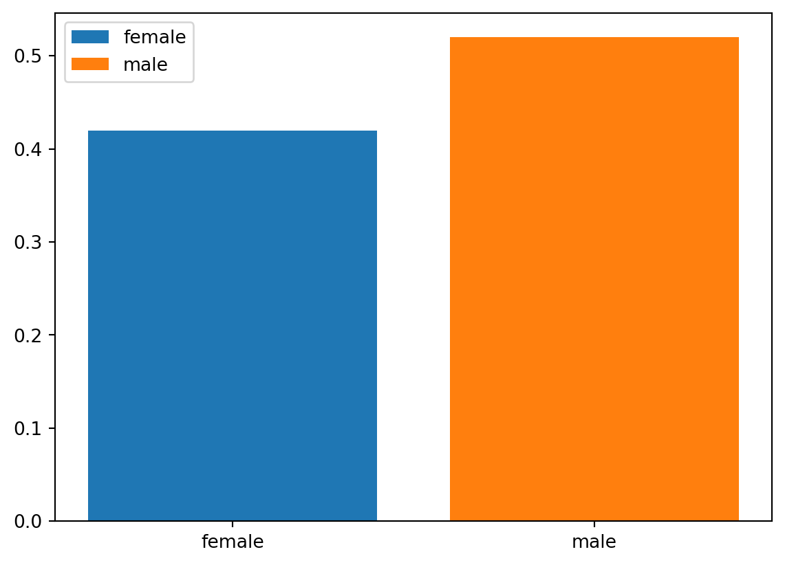
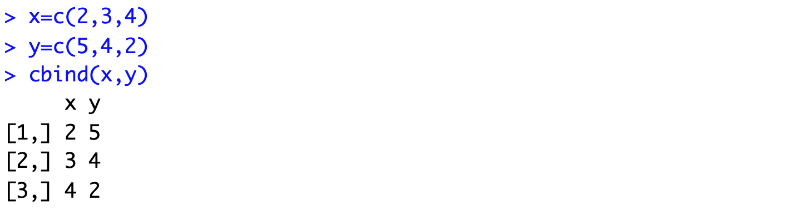
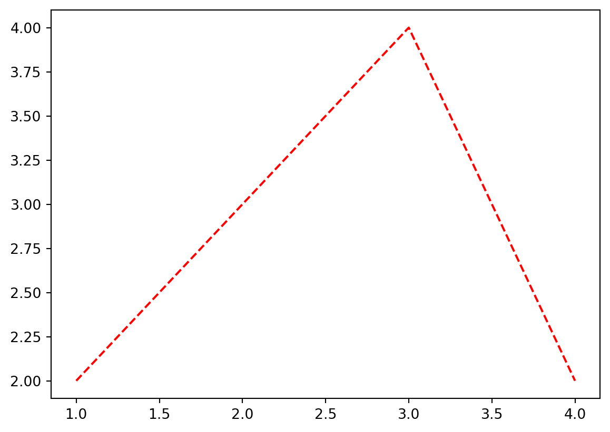
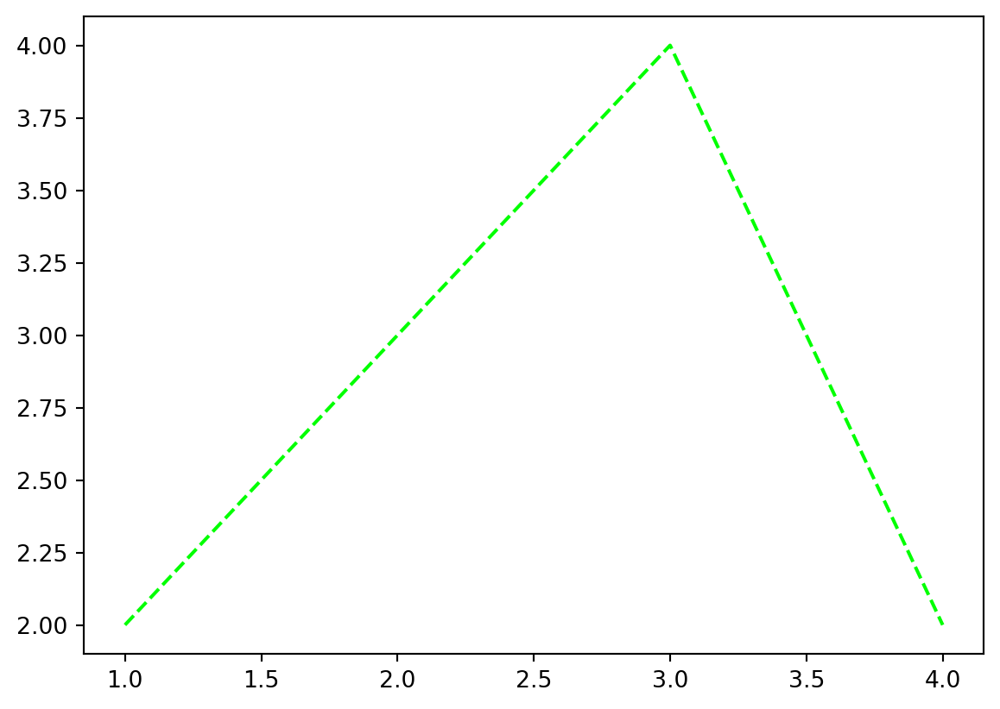
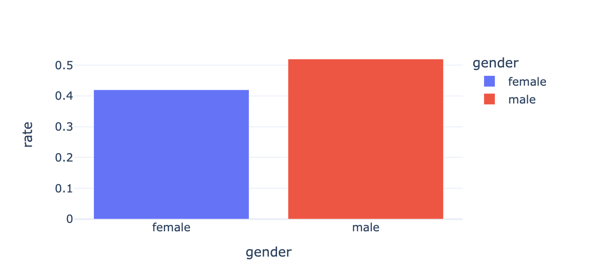

import numpy as np
import pandas as pd
import matplotlib.pyplot as plt
#---#
import plotly.express as px
import plotly.graph_objects as go
import plotly.io as pio13wk-1: Plotly – pio, go 를 활용한 시각화
plotly

1. 강의영상
2. Imports
pd.options.plotting.backend = "plotly"
pio.templates.default = "plotly_white"3. Intro
A. 궁금해
12wk-2 강의노트중..
df_sample = pd.DataFrame(
{'path':['A','A','B','B','B'],
'lon':[-73.986420,-73.995300,-73.975922,-73.988922,-73.962654],
'lat':[40.756569,40.740059,40.754192,40.762859,40.772449]}
)
fig = px.line_mapbox(
data_frame=df_sample,
lat = 'lat',
lon = 'lon',
color = 'path',
line_group = 'path',
#---#
mapbox_style = 'carto-positron',
zoom=12,
width = 750,
height = 600
)
scatter_data = px.scatter_mapbox(
data_frame=df_sample,
lat = 'lat',
lon = 'lon',
color = 'path',
#---#
mapbox_style = 'carto-positron',
zoom=12,
width = 750,
height = 600
).data
fig.add_trace(scatter_data[0])
fig.add_trace(scatter_data[1])
fig.show(config={'scrollZoom':False})도데체 저런코드는 어떻게 알아내는 걸까?
B. 심슨의 역설 데이터
- 아래의 자료를 관찰하자.
df = pd.read_csv("https://raw.githubusercontent.com/guebin/DV2022/master/posts/Simpson.csv",index_col=0,header=[0,1]).reset_index().melt(id_vars='index').set_axis(['department','gender','result','count'],axis=1)
df.head()| department | gender | result | count | |
|---|---|---|---|---|
| 0 | A | male | fail | 314 |
| 1 | B | male | fail | 208 |
| 2 | C | male | fail | 204 |
| 3 | D | male | fail | 279 |
| 4 | E | male | fail | 137 |
C. plotly의 시각화구조
- 아래와 같은 방법이 가능하다.
- pandas backend
px, 즉plotly.express를 이용한 시각화go, 즉plotly.graph_objects를 이용한 시각화pio, 즉plotly.io를 이용한 시각화
- 예시1: pandas backend
df.pivot_table(index='gender',columns='result',values='count',aggfunc='sum')\
.assign(rate = lambda df: df['pass']/(df['fail']+df['pass']))\
.assign(rate = lambda df: np.round(df['rate'],2))\
.loc[:,'rate'].reset_index()\
.plot.bar(
x='gender',
y='rate',
color='gender',
#---#
title = '버클리대학교 성별합격률',
width = 600
)- 예시2: px.bar를 이용한 plot
tidydata = df.pivot_table(index='gender',columns='result',values='count',aggfunc='sum')\
.assign(rate = lambda df: df['pass']/(df['fail']+df['pass']))\
.assign(rate = lambda df: np.round(df['rate'],2))\
.loc[:,'rate'].reset_index()
#---#
px.bar(
tidydata,
x='gender',
y='rate',
color='gender',
#---#
title = '버클리대학교 성별합격률',
width = 600
)- 예시3: px.bar를 이용한 플랏 (pandas Series를 입력) – 결과가 조금 다름
tidydata = df.pivot_table(index='gender',columns='result',values='count',aggfunc='sum')\
.assign(rate = lambda df: df['pass']/(df['fail']+df['pass']))\
.assign(rate = lambda df: np.round(df['rate'],2))\
.loc[:,'rate'].reset_index()
#---#
px.bar(
x=tidydata.gender,
y=tidydata.rate,
color=tidydata.gender,
#---#
title = '버클리대학교 성별합격률',
width = 600
)- x축,y축,legend의 제목이 살짝 달라지긴 했음..
- 예시4: px.bar를 이용한 플랏 (list를 입력) – 결과가 조금 다름
px.bar(
x=['female', 'male'],
y=[0.42, 0.52],
color=['female', 'male'],
#---#
title = '버클리대학교 성별합격률',
width = 600
)# 예시5: go를 이용한 시각화 – 색깔시각화가 불가능
- ggplot() + geom_col() 의 느낌으로!
fig = go.Figure()
bar = go.Bar(
x=['female', 'male'],
y=[0.42, 0.52]
)
layout = {'title':'버클리대학교의 남녀합격률','width':600}
fig.add_trace(bar).update_layout(layout)- 색을 어떻게 구분하냐?
#
# 예시6: go를 이용한 시각화 – matplotlib의 겹쳐그리기 감성으로 색깔시각화 (\(\star\))
(예비학습) – 이런느낌이 있었지
plt.plot([1,2,3],[3,4,1],label='A')
plt.plot([1,2,3],[4,2,5],label='B')
plt.legend()
이걸 응용하면
plt.bar(['female'],[0.42],label='female')
plt.bar(['male'],[0.52],label='male')
plt.legend()
예비학습에서 힌트를 얻으면!
fig = go.Figure()
bar_female = go.Bar(
x=['female'],
y=[0.42]
)
bar_male = go.Bar(
x=['male'],
y=[0.52]
)
layout = {'title':'버클리대학교의 남녀합격률','width':600}
fig.add_trace(bar_female).add_trace(bar_male)\
.update_layout(layout)# 예시7: go를 이용한 시각화 – 색상의 변경
- 여자는 빨강, 남자는 파랑으로?
fig = go.Figure()
bar_female = go.Bar(
x=['female'],
y=[0.42],
marker= {'color':'red'}
)
bar_male = go.Bar(
x=['male'],
y=[0.52],
marker= {'color':'blue'}
)
layout = {'title':'버클리대학교의 남녀합격률','width':600}
fig.add_trace(bar_female).add_trace(bar_male)\
.update_layout(layout)#
# 예시8: go를 이용한 시각화 – 색상재설정 + x축, y축, legend의 title의 설정 + hover 설정
- 색상설정:
#EF553B,#636efa - hovertemplate:
'gender=%{x}<br>rate=%{text}<extra></extra>'
fig = go.Figure()
bar_female = go.Bar(
x=['female'],
y=[0.42],
marker= {'color':'#EF553B'},
text =[0.42],
hovertemplate='gender=%{x}<br>rate=%{text}<extra></extra>',
name='female'
)
bar_male = go.Bar(
x=['male'],
y=[0.52],
marker= {'color':'#636efa'},
text= [0.52],
hovertemplate='gender=%{x}<br>rate=%{text}<extra></extra>',
name='male'
)
layout = {
'title':'버클리대학교의 남녀합격률',
'width':600,
'xaxis':{'title':'gender'},
'yaxis':{'title':'rate'},
'legend':{'title':'gender'},
}
fig.add_trace(bar_female).add_trace(bar_male)\
.update_layout(layout)#
궁금: #EF553B 이런거 어떻게 알았어?…
_fig = df.pivot_table(index='gender',columns='result',values='count',aggfunc='sum')\
.assign(rate = lambda df: df['pass']/(df['fail']+df['pass']))\
.assign(rate = lambda df: np.round(df['rate'],2))\
.loc[:,'rate'].reset_index()\
.plot.bar(
x='gender',
y='rate',
color='gender',
#---#
title = '버클리대학교 성별합격률',
width = 600
)_fig.data(Bar({
'alignmentgroup': 'True',
'hovertemplate': 'gender=%{x}<br>rate=%{y}<extra></extra>',
'legendgroup': 'female',
'marker': {'color': '#636efa', 'pattern': {'shape': ''}},
'name': 'female',
'offsetgroup': 'female',
'orientation': 'v',
'showlegend': True,
'textposition': 'auto',
'x': array(['female'], dtype=object),
'xaxis': 'x',
'y': array([0.42]),
'yaxis': 'y'
}),
Bar({
'alignmentgroup': 'True',
'hovertemplate': 'gender=%{x}<br>rate=%{y}<extra></extra>',
'legendgroup': 'male',
'marker': {'color': '#EF553B', 'pattern': {'shape': ''}},
'name': 'male',
'offsetgroup': 'male',
'orientation': 'v',
'showlegend': True,
'textposition': 'auto',
'x': array(['male'], dtype=object),
'xaxis': 'x',
'y': array([0.52]),
'yaxis': 'y'
}))_fig.layoutLayout({
'barmode': 'relative',
'legend': {'title': {'text': 'gender'}, 'tracegroupgap': 0},
'template': '...',
'title': {'text': '버클리대학교 성별합격률'},
'width': 600,
'xaxis': {'anchor': 'y',
'categoryarray': [female, male],
'categoryorder': 'array',
'domain': [0.0, 1.0],
'title': {'text': 'gender'}},
'yaxis': {'anchor': 'x', 'domain': [0.0, 1.0], 'title': {'text': 'rate'}}
})D. px vs go
- go는 핸드메이드 제품을 px는 양산품을 만든다고 이해하면 편리하다.
go의 특징: 유저의 자유도가 매우 높음 (내가 직접 하는 느낌). 이는 그림의 크기, 색상 등을 선호에 맞게 조정하기 유리. 생산성이 낮음.px의 특징: 유저의 자유도가 낮음 (알아서 해주는 느낌). 원하는 그림을 빠르게 생산할 수 있음. 다만 내가 원하는 디자인이 나오지 않을 수 있음.
- 뭘 써야 할까?
px를 쓰는게 좋다.- 그런데
go를 이용하여 그림이 그려지는 원리를 이해하면 이후에px를 이용한 그림을 수정하기 용이하다. - 전략:
px로 그림을 그린다. +go로 수정한다.
4. pio를 이용한 시각화
A. 함수의 입력 (예비학습)
예제1 – 두 벡터 x,y가 주어졌을때 R에서 cbind와 같은 역할을 하는 함수를 구현하라.

def cbind(x,y):
rslt = np.stack([x,y],axis=1)
return rslt cbind([2,3,4],[5,4,2])array([[2, 5],
[3, 4],
[4, 2]])#
예제2 – 세개이상의 벡터가 온다면?
- args를 이용하여 이후 입력을 받음
def _cbind(x,y,*args):
print(args)
rslt = np.stack([x,y],axis=1)
return rslt _cbind([1,1,1],[2,2,2],[3,3,3],[4,4,4])([3, 3, 3], [4, 4, 4])array([[1, 2],
[1, 2],
[1, 2]])- args는 함수내부에서 “튜플”로 취급된다!!
- args를 이용한 수정
def cbind(x,y,*args):
rslt = np.stack([x,y]+list(args),axis=1)
return rslt cbind([1,1,1],[2,2,2],[3,3,3],[4,4,4])array([[1, 2, 3, 4],
[1, 2, 3, 4],
[1, 2, 3, 4]])#
# 예제3 – 기본적으로는 cbind의 동작을 하지만 경우에 따라서 rbind처럼 동작하길 원한다면?
- axis라는 변수를 따로 생성하여 입력으로 처리, 기본값은 1
def bind(x,y,*args,axis=1):
rslt = np.stack([x,y]+list(args),axis=axis)
return rslt bind([1,1,1],[2,2,2],[3,3,3],axis=1)array([[1, 2, 3],
[1, 2, 3],
[1, 2, 3]])#
# 예제4 – 여러가지 추가옵션을 사용하여 print를 통제하고 싶다면?
def _bind(x,y,*args,axis=1,**kwargs):
print(kwargs)
rslt = np.stack([x,y]+list(args),axis=axis)
return rslt _bind([1,1,1],[2,2,2],[3,3,3],axis=1){}array([[1, 2, 3],
[1, 2, 3],
[1, 2, 3]])_bind([1,1,1],[2,2,2],[3,3,3],axis=1,vb1=True,vb2=True,vb3=False,vb4=False){'vb1': True, 'vb2': True, 'vb3': False, 'vb4': False}array([[1, 2, 3],
[1, 2, 3],
[1, 2, 3]])def bind(x,y, *args, axis=1, **kwargs):
if ('vb1' in kwargs) and (kwargs['vb1'] == True):
print(f'위치인자: {x,y}')
if ('vb2' in kwargs) and (kwargs['vb2'] == True):
print(f'가변위치인자: {args}')
if ('vb3' in kwargs) and (kwargs['vb3'] == True):
print(f'키워드인자: {axis}')
if ('vb4' in kwargs) and (kwargs['vb4'] == True):
print(f'가변키워드인자: {kwargs}')
rslt = np.stack([x,y]+list(args),axis=axis)
return rslt bind(
[1,1,1],[2,2,2],
[3,3,3],
axis=0,
vb1=True,vb2=True,vb3=True,vb4=True
) 위치인자: ([1, 1, 1], [2, 2, 2])
가변위치인자: ([3, 3, 3],)
키워드인자: 0
가변키워드인자: {'vb1': True, 'vb2': True, 'vb3': True, 'vb4': True}array([[1, 1, 1],
[2, 2, 2],
[3, 3, 3]])#
# 예제5 – 위치인자를 키워드인자보다 뒤에 넣을 경우?
bind(axis=0,[1,2,3],[2,3,4])SyntaxError: positional argument follows keyword argument (3063801598.py, line 1)bind([1,2,3],[2,3,4],axis=0)array([[1, 2, 3],
[2, 3, 4]])bind([1,2,3],[2,3,4],axis=0,[3,4,5])SyntaxError: positional argument follows keyword argument (3465570716.py, line 1)#
# 예제6 – 가변키워드인자가 존재할 때, 키워드인자의 키를 잘못 입력할 경우?
bind([1,2,3],[2,3,4],ax=0,vb1=True,vb2=True,vb3=True,vb4=True)위치인자: ([1, 2, 3], [2, 3, 4])
가변위치인자: ()
키워드인자: 1
가변키워드인자: {'ax': 0, 'vb1': True, 'vb2': True, 'vb3': True, 'vb4': True}array([[1, 2],
[2, 3],
[3, 4]])bind([1,2,3],[2,3,4], verbose = True)array([[1, 2],
[2, 3],
[3, 4]])- 아무일없음
bind([1,2,3],[2,3,4],axis=3)AxisError: axis 3 is out of bounds for array of dimension 2- 이건 문제가 있음
- 요약
- 함수의 입력은 꽤 복잡한 방식으로 동작한다.
- 위치인자의 위치를 잘못 넣으면 동작하지 않는다.
- 가변키워드 인자가 존재할 때, 키워드인자의 키를 다른이름으로 넣으면 에러가 발생하지 않는다. (그냥 무시)
#
# 예제7 – 은근히 짜증났던 plt.plot()
plt.plot([1,2,3,4],[2,3,4,2],'r--')
plt.plot([1,2,3,4],[2,3,4,2],color='lime','--')SyntaxError: positional argument follows keyword argument (2277522587.py, line 1)plt.plot([1,2,3,4],[2,3,4,2],'--',color='lime')
#
B. dictionary + pio.show()
# 예제1 – dictionary + pio.show()
fig = dict()
fig['data'] = [
{'type':'bar','x':['female'],'y':[0.42]},
{'type':'bar','x':['male'],'y':[0.52]},
]
fig['layout'] = {
'title':{'text': '버클리대학교 성별합격률'},
'width':600
}
pio.show(fig) # pio.show에 필요한 입력들을 fig라는 이름의 딕셔너리로 전달하는 느낌기묘하다.. 마치 pio.show()에 필요한 kwargs를 fig라는 이름의 dict로 전달하는 느낌임!!
요약: fig는 dictionary와 본질이 비슷하고, 이는 pio.show()에 전달할 kwargs를 모아놓은 집합이다.
#
# 예제2 – female의 rate를 0.62로 수정
- 아래의 그림을 그렸음.
fig = dict()
fig['data'] = [
{'type':'bar','x':['female'],'y':[0.42]},
{'type':'bar','x':['male'],'y':[0.52]},
]
fig['layout'] = {
'title':{'text': '버클리대학교 성별합격률'},
'width':600
}
pio.show(fig) # pio.show에 필요한 입력들을 fig라는 이름의 딕셔너리로 전달하는 느낌- female의 rate을 0.42에서 0.62로 바꾸고 싶음.
fig['data'][0]['y'] = [0.62]
fig{'data': [{'x': ['female'], 'y': [0.62], 'type': 'bar'},
{'x': ['male'], 'y': [0.52], 'type': 'bar'}],
'layout': {'title': {'text': '버클리대학교 성별합격률'}, 'width': 600}}pio.show(fig)#
# 예제3 – fig에 정리된 arg들이 전부는 아님
- 아래의 그림을 다시 관찰하자.
fig = dict()
fig['data'] = [
{'type':'bar','x':['female'],'y':[0.42]},
{'type':'bar','x':['male'],'y':[0.52]},
]
fig['layout'] = {
'title':{'text': '버클리대학교 성별합격률'},
'width':600
}
pio.show(fig) # pio.show에 필요한 입력들을 fig라는 이름의 딕셔너리로 전달하는 느낌- 아래의 코드는 위와 같은 결과를 준다.
fig = dict()
fig['data'] = [
{'type':'bar','x':['female'],'y':[0.42],'marker':{'color':'#636efa'}},
{'type':'bar','x':['male'],'y':[0.52]},
]
fig['layout'] = {
'title':{'text': '버클리대학교 성별합격률'},
'width':600
}
pio.show(fig) # pio.show에 필요한 입력들을 fig라는 이름의 딕셔너리로 전달하는 느낌- fig에 아무것도 정의하지 않아도 함수는 동작함
pio.show(fig=dict())- 내부적으로 어떠한 값이 저장되어 있는 것임
#
5. go를 이용한 시각화
A. pio와 go의 연결
fig = dict()
fig['data'] = [
{'type':'bar','x':['female'],'y':[0.42]},
{'type':'bar','x':['male'],'y':[0.52]},
]
fig['layout'] = {
'title':{'text': '버클리대학교 성별합격률'},
'width':600
}
pio.show(fig) # pio.show에 필요한 입력들을 fig라는 이름의 딕셔너리로 전달하는 느낌위의 코드와 동일한 효과를 주는 코드를 알아보자.
# 예제1 – data의 원소를 dict로 정리하여 추가
fig = dict()
fig['data'] = list()
bar_female = {'type':'bar','x':['female'],'y':[0.42]}
bar_male = {'type':'bar','x':['male'],'y':[0.52]}
fig['data'].append(bar_female)
fig['data'].append(bar_male)
fig['layout'] = {
'title':{'text': '버클리대학교 성별합격률'},
'width':600
}
pio.show(fig) # pio.show에 필요한 입력들을 fig라는 이름의 딕셔너리로 전달하는 느낌#
# 예제2 – go.Bar()를 이용
fig = dict()
fig['data'] = list()
bar_female = go.Bar({'x':['female'],'y':[0.42]}) # bar_female = {'type':'bar','x':['female'],'y':[0.42]}
bar_male = go.Bar({'x':['male'],'y':[0.52]}) # bar_male = {'type':'bar','x':['male'],'y':[0.52]}
fig['data'].append(bar_female)
fig['data'].append(bar_male)
fig['layout'] = {
'title':{'text': '버클리대학교 성별합격률'},
'width':600
}
pio.show(fig) # pio.show에 필요한 입력들을 fig라는 이름의 딕셔너리로 전달하는 느낌#
# 예제3 – go.Bar()를 이용, go.Figure()+add_trace()이용
fig = go.Figure() # fig = dict()
fig['data'] = tuple()
bar_female = go.Bar({'x':['female'],'y':[0.42]}) # bar_female = {'type':'bar','x':['female'],'y':[0.42]}
bar_male = go.Bar({'x':['male'],'y':[0.52]}) # bar_male = {'type':'bar','x':['male'],'y':[0.52]}
fig.add_trace(bar_female) # fig['data'].append(bar_female)
fig.add_trace(bar_male) # fig['data'].append(bar_male)
fig['layout'] = {
'title':{'text': '버클리대학교 성별합격률'},
'width':600
}
fig # fig.show() # pio.show(fig) # pio.show에 필요한 입력들을 fig라는 이름의 딕셔너리로 전달하는 느낌# 예제4 – go.Bar()를 다르게 선언하여 이용, go.Figure()+add_trace()이용
fig = go.Figure() # fig = dict()
bar_female = go.Bar(x=['female'],y=[0.42]) # bar_female = go.Bar({'x':['female'],'y':[0.42]})
bar_male = go.Bar(x=['male'],y=[0.52]) # bar_male = go.Bar({'x':['male'],'y':[0.52]})
fig.add_trace(bar_female)
fig.add_trace(bar_male)
fig['layout'] = {
'title':{'text': '버클리대학교 성별합격률'},
'width':600
}
fig # fig.show() # pio.show(fig) # pio.show에 필요한 입력들을 fig라는 이름의 딕셔너리로 전달하는 느낌#
# 예제5 – go.Bar()를 사용X, go.Figure()+add_trace()이용
fig = go.Figure() # fig = dict()
bar_female = {'type':'bar','x':['female'],'y':[0.42]}
bar_male = {'type':'bar','x':['male'],'y':[0.52]}
fig.add_trace(bar_female)
fig.add_trace(bar_male)
fig['layout'] = {
'title':{'text': '버클리대학교 성별합격률'},
'width':600
}
fig # fig.show() # pio.show(fig) # pio.show에 필요한 입력들을 fig라는 이름의 딕셔너리로 전달하는 느낌#
# 예제6 – go.Bar()를 이용, go.Figure()+add_traces()이용
fig = go.Figure() # fig = dict()
bar_female = go.Bar(x=['female'],y=[0.42])
bar_male = go.Bar(x=['male'],y=[0.52])
fig.add_traces([bar_female,bar_male])
fig['layout'] = {
'title':{'text': '버클리대학교 성별합격률'},
'width':600
}
fig #
# 예제7 – go.Bar()를 이용,go.Figure()+add_traces()이용 ,update_layout()이용
fig = go.Figure() # fig = dict()
bar_female = go.Bar(x=['female'],y=[0.42])
bar_male = go.Bar(x=['male'],y=[0.52])
fig.add_traces([bar_female,bar_male])
fig.update_layout(
{'title':{'text': '버클리대학교 성별합격률'},'width':600}
)
fig #
# 예제8 – go.Bar()를 이용, go.Figure()+add_traces()이용, update_layout()의 다른이용
fig = go.Figure() # fig = dict()
bar_female = go.Bar(x=['female'],y=[0.42])
bar_male = go.Bar(x=['male'],y=[0.52])
fig.add_traces([bar_female,bar_male])
fig.update_layout(
title={'text': '버클리대학교 성별합격률'},
width=600
)
fig #
B. go를 이용하는 추천포맷
fig = go.Figure()
fig.add_traces(
[go.Bar(x=['female'], y= [0.42], name='female'),
go.Bar(x=['male'], y= [0.52], name='male')]
)
fig.update_layout(
width = 600,
legend = {'title':{'text':'gender'}}
)6. HW
fig = go.Figure()
fig.add_traces(
[go.Bar(x=['female'], y= [0.42], name='female'),
go.Bar(x=['male'], y= [0.52], name='male')]
)
fig.update_layout(
width = 600,
legend = {'title':{'text':'gender'}}
)위의 코드를 적절하게 수정하여 아래의 결과를 만들어라.

Note: x,y축의 이름이 수정되었음.